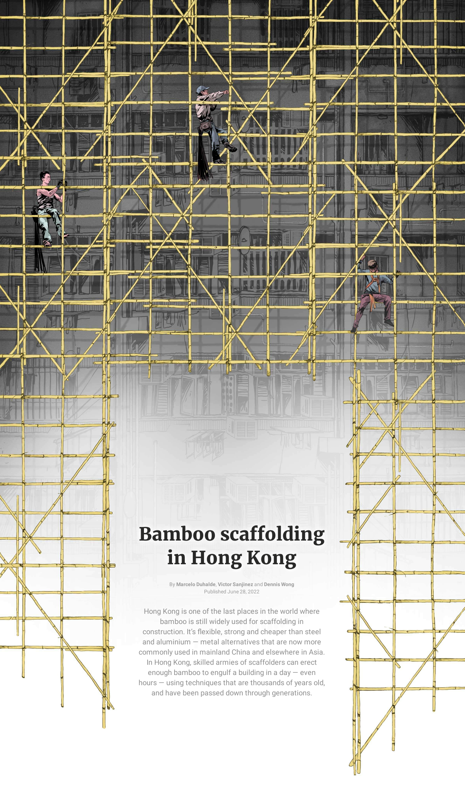
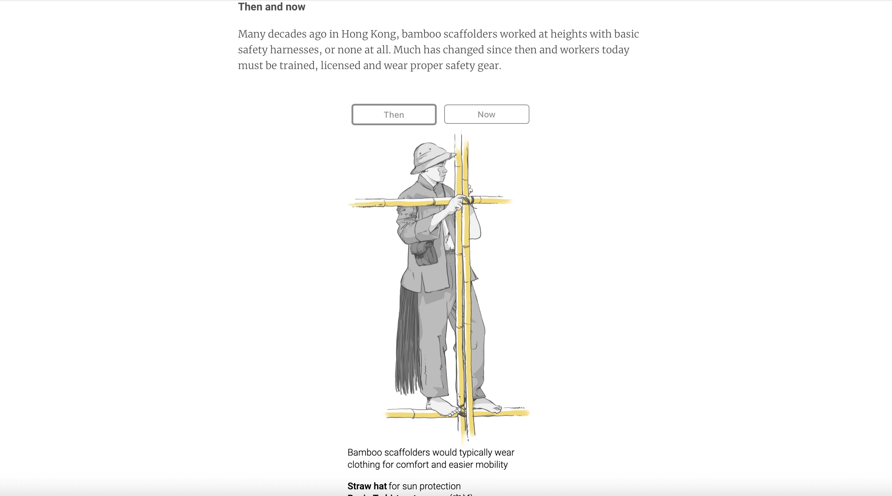
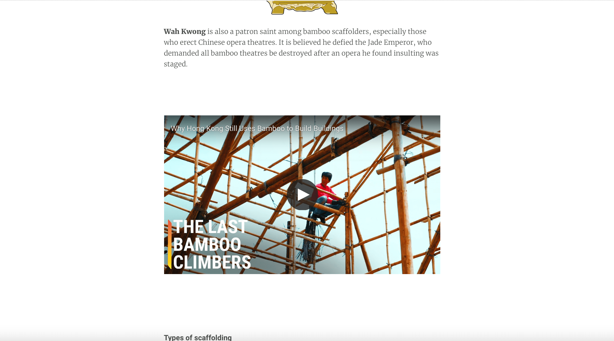

INFOGRAFÍA IMPRESA
En la infografía mostrada se da a conocer cómo en Hong Kong se construye apoyándose en estructuras de palos de bambú y la evolución que esta técnica ha tenido.
Un primer gráfico grande, que es un gráfico no-figurativo, presenta las estructuras de bamboo que usan en Hong Kong en las construcciones para sostener a los constructores. La estructura es destacada con amarillo mientras que el edificio y los demás detalles están en tonos grises.
El primer gráfico a la derecha complementa la imagen del medio y representa el quipo con que trabajan los constructores, como sus guantes o mangas para protegrese del sol. El gráfico inferior nos muestra cómo se sostienen los constructores sobre los palos de bambú y complementa la imagen anterior del equipo de los constructores.
El gráfico inferior a la derecha nos muestra el tipo de nudo que se hace para amarrar los palos de bambú.
El mapa superior a la izquierda nos indica el lugar donde ocurre esto, en Hong Kong.
INFOGRAFÍA DIGITAL
La infografía digital comienza con una gran imagen que nos muestra las estructuras de bambú donde hay que hacer scroll para verla completa.
La imagen de las estructuras acá muestra de cerca a los constructores que van apareciendo a medida que se va haciendo scroll.

En la imagen se ve representado el equipo que usaban los constructores antes y después, y para ver a ambos hay que interactuar mediante un botón.
También en esta infografía podemos interactuar con material audiovisual, el cual aporta información que es difícil de ver en tan solo un papel.
¿Cómo podrían justificarse todas las modificaciones? ¿Se trata de una simple adaptación de datos de un sustrato a otro? Convendría pensar en una reestructuración completa del trabajo infográfico, que se hace atendiendo a los usos y costrumbres a cada medio?